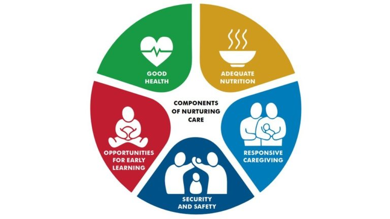

Coffee talks is a space where mothers can find workshops to enhance their children's development. Each workshop has a theoretical portion and a practice section.
Child Development Basics
Healthy Development
The early years of a child’s life are very important for his or her health and development. Healthy development means that children of all abilities, including those with special health care needs, are able to grow up where their social, emotional and educational needs are met. Having a safe and loving home and spending time with family―playing, singing, reading, and talking―are very important. Proper nutrition, exercise, and sleep also can make a big difference.
Effective Parenting Practices
takes many different forms. However, some positive parenting practices work well across diverse families and in diverse settings when providing the care that children need to be happy and healthy, and to grow and develop well. A recent report looked at the evidence in scientific publications for what works, and found these key ways that parents can support their child’s healthy development:
- Responding to children in a predictable way
- Showing warmth and sensitivity
- Having routines and household rules
- Sharing books and talking with children
- Supporting health and safety
- Using appropriate discipline without harshness
Parents who use these practices can help their child stay healthy, be safe, and be successful in many areas—emotional, behavioral, cognitive, and social.
Developmental Milestones
Skills such as taking a first step, smiling for the first time, and
waving “bye-bye” are called developmental milestones. Children reach
milestones in how they play, learn, speak, behave, and move (for
example, crawling and walking). Children develop at their own pace, so
it’s impossible to tell exactly when a child will learn a given skill.
However, the developmental milestones give a general idea of the
changes to expect as a child gets older. As a parent, you know your
child best. If your child is not meeting the milestones for his or her
age, or if you think there could be a problem with your child’s
development, talk with your child’s doctor and share your concerns.
Don’t wait.
Learn about milestones children should reach from birth through 5
years of age
Developmental Monitoring and Screening
Parents, grandparents, early childhood providers, and other caregivers can participate in developmental monitoring, which observes how your child grows and changes over time and whether your child meets the typical developmental milestones in playing, learning, speaking, behaving, and moving. Developmental screening takes a closer look at how your child is developing. A missed milestone could be a sign of a problem, so when you take your child to a well visit, the doctor, nurse, or another specialist might give your child a brief test, or you will complete a questionnaire about your child. If the screening tool identifies an area of concern, a formal developmental evaluation may be needed, where a trained specialist takes an in-depth look at a child’s development. If a child has a developmental delay, it is important to get help as soon as possible. When a developmental delay is not found early, children must wait to get the help they need to do well in social and educational settings.
Learn More about Developmental Monitoring and Screening